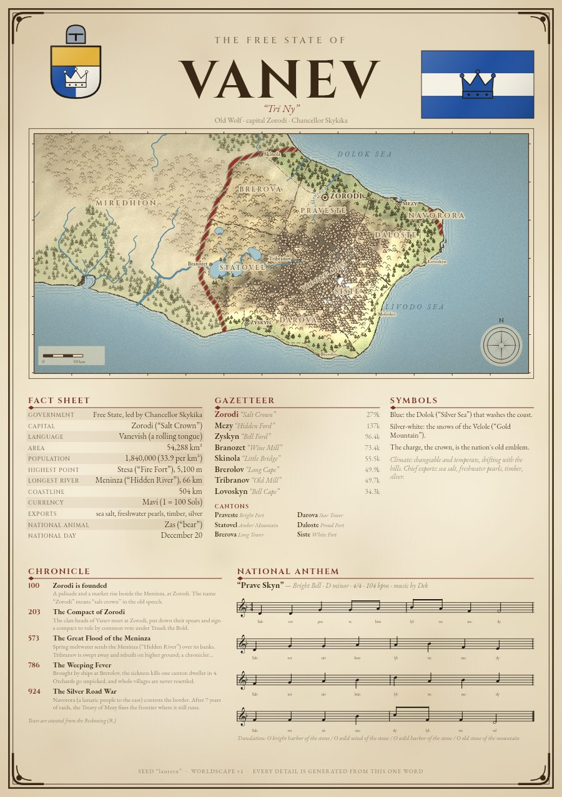
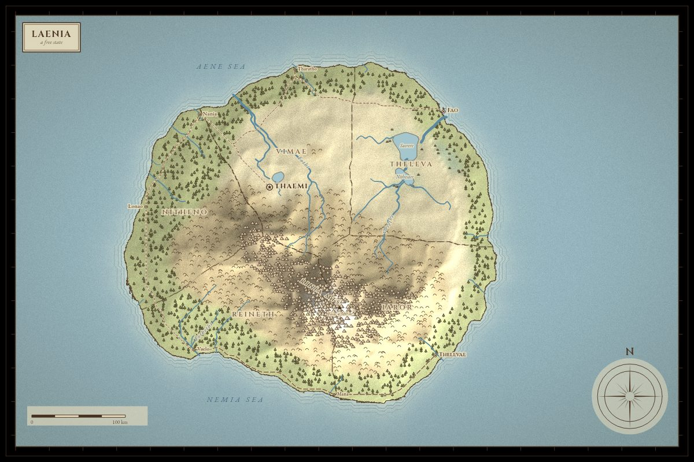

API documentation
Everything Worldscape makes is available as a URL. No key, no sign-up, CORS enabled. Responses for a given seed never change, so they are cached for a year.
Overview
https://worldscape-teal.vercel.app/api/{poster|map|flag|arms|anthem|country|random}?seed=WORD
All endpoints accept GET, HEAD and OPTIONS. Errors are JSON: {"error": "…", "hint": "…"} with status 400 (bad input) or 413 (response over the 4.5 MB platform limit). GET /api/describe lists valid options as JSON.



GET /api/poster
The whole country on one A-series sheet (1 : √2): header with arms and flag, map, fact sheet, gazetteer, symbols, chronicle and the anthem's sheet music.
| Parameter | Default | Description |
|---|---|---|
seed | random | Any text up to 200 characters. Leave it out for a random country (never cached). |
width | 1240 | Pixels, 480–2480. Height follows the A-series ratio. 1240 ≈ A4 at 150 dpi, 2480 ≈ A4 at 300 dpi. |
style | parchment | Map style: parchment, atlas, night. |
format | png | png, jpeg or webp. |
quality | 90 | 1–100 for jpeg and webp. |
download | – | Add download=1 to receive an attachment filename. |
The default format is jpeg; a 2480 px PNG exceeds the response limit, so use jpeg or webp for print sizes.
https://worldscape-teal.vercel.app/api/poster?seed=saffron&width=2480&format=jpeg&download=1
GET /api/map
| Parameter | Default | Description |
|---|---|---|
seed | random | Any text up to 200 characters. Leave it out for a random country (never cached). |
width, height | 1600, 1056 | Pixels, 320–3200 each, at most 7 megapixels total. Or use size=1600x1000. |
style | parchment | One of parchment, atlas, night. |
labels, roads, borders, title | 1 | Set to 0 to hide that layer. |
format | png | png, jpeg or webp. |
quality | 90 | 1–100 for jpeg and webp. |
download | – | Add download=1 to receive an attachment filename. |
https://worldscape-teal.vercel.app/api/map?seed=glacier&style=atlas&labels=0
GET /api/flag and /api/arms
| Parameter | Default | Description |
|---|---|---|
seed | random | Any text up to 200 characters. Leave it out for a random country (never cached). |
width | 900 (flag), 800 (arms) | Pixels, 64–2000. The flag's height follows its own ratio. Arms are PNG with a transparent background. |
format | png | png, jpeg or webp. |
quality | 90 | 1–100 for jpeg and webp. |
download | – | Add download=1 to receive an attachment filename. |
 
GET /api/anthem
A Standard MIDI file by default, so it plays in anything. Change format for sheet music or lyrics.
| Parameter | Default | Description |
|---|---|---|
seed | random | Any text up to 200 characters. Leave it out for a random country (never cached). |
format | mid | mid (audio/midi), png, jpeg, webp (sheet music, width 600–2400), or json (title, key, lyrics with translation). |
download | – | Attachment filename instead of inline. |
https://worldscape-teal.vercel.app/api/anthem?seed=saffron # MIDI https://worldscape-teal.vercel.app/api/anthem?seed=saffron&format=png # sheet music https://worldscape-teal.vercel.app/api/anthem?seed=saffron&format=json # lyrics
GET /api/country
Everything as JSON: names with meanings, facts, cities, provinces, geography, flag and arms specifications, symbolism, chronicle and anthem lyrics. Add pretty=1 for indented output.
{
"seed": "saffron",
"country": {
"name": "Megwirenor",
"government": "Republic",
"capital": "Rer'Ni"
},
"facts": {
"Area": "49,696 km²"
},
"cities": [
"…"
],
"history": {
"events": [
"…"
]
},
"anthem": {
"title": {
"text": "…",
"en": "…"
},
"lyrics": [
"…"
]
},
"flag": "{…}",
"arms": "{…}",
"links": {
"poster": "/api/poster?seed=saffron"
}
}
GET /api/random
A fresh random seed with the country's name and every link. Never cached.
curl https://worldscape-teal.vercel.app/api/random
Short URLs
| Parameter | Description | |
|---|---|---|
/c/:seed | → | /api/country?seed=:seed |
/poster/:seed | → | /api/poster |
/map/:seed | → | /api/map |
/flag/:seed, /arms/:seed | → | /api/flag, /api/arms |
/anthem/:seed | → | /api/anthem |
/random | → | a random poster |
Limits and determinism
- Seeds are case-sensitive and trimmed:
Saffronandsaffronare different countries. - Same seed and same engine version give byte-identical data. The version is returned in
X-Worldscape-Engine. - Poster 480–2480 px, map 320–3200 px, flag 64–2000 px, sheet 600–2400 px.
- Be kind: for heavy use, cache responses or run the engine yourself (below).
Use the engine directly
The engine is one file with no dependencies that runs in browsers and Node. It generates the country; drawing needs any Canvas 2D context.
const W = require('./public/engine.js'); // or <script src="engine.js"> in a page
const country = W.generateCountry('saffron');
console.log(country.geo.name, country.state.government);
const midi = W.anthemMidi(country.anthem); // Uint8Array
// draw: W.drawMap(ctx, country, 0, 0, 1600, 1000, { style: 'parchment' })
See the README for the full list of exports.